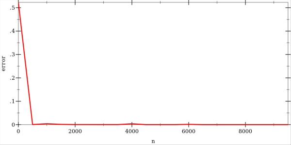

Perceptron convergence algorithm
Perceptron is a function with several inputs and one output that linearly combines the input and the internal weights and applies an activation function on the result. Weights are some values to be trained. Perceptron is a simplified model of a neuron with any number of inputs and one output. The activation function is signum, which returns a 1 if the input is greater than zero, and -1 otherwise. \[\mbox{y} = \mbox{sign}(\Sigma_{i}\mbox{w}_i*\mbox{x}_i)\]
Perceptron can be trained by correcting its weights by a small amount each time when it incorrectly classifies a training example.
\[w_{new} = w_{old} + x*\eta*\mbox{error}\],
where error is the difference between desired and actual outputs of the perceptron, and \(\eta\) is the learning rate that specifies how much the old weight should be moved and make the error a little bit smaller. \(\eta\) is typically a value between 0 and 1.0.
Now let's train a perceptron to linearly separate a dataset sampled from a two half-moons distribution. Note that this is a reimplementation of experiments presented in [Haykin2009NetworksandLearningMachines]. Here are some examples of how the distribution looks like. Each moon has a radius and a width. The position of the upper half moon is fixed, while the lower half moon can be freely moved around.

The perceptron has 2 inputs: x and y coordinates of the training example. The dataset contains 5000 training examples randomly sampled from the half-moon distribution. The training is done using \(\eta\) = 0.3. The weights are initialized randomly, and here you can see the trained perceptrons with 100 different initial weights:

The error rate goes down pretty quickly as more training examples are considered. Here is a graph showing the error rate with a varying number of training examples. The curve was produced by averaging over 50 independent trials.

Perceptron works well in cases where the classes can be linearly separated from each other. When it's not the case, the perceptron performs poorly. Here is an example of trained perceptrons over our half-moons distribution where the lower half-moon can be found inside the upper half-moon:

The error graph shows that increasing the number of training examples doesn't help, and the performance becomes worse. As \(n\) increases, more training examples are found inside the wrong half-moon and push the weights away from horizontal position of the decision boundary. Thus, the error becomes larger.

Implementation of perceptron convergence algorithm in Racket can be found in in my github repository.